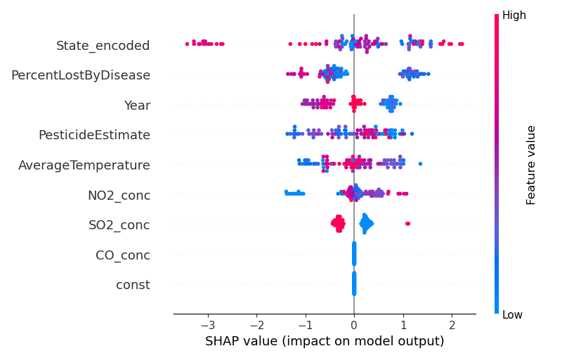

| Variable | VIF | |
|---|---|---|
| 0 | AverageTemperature | 6.448131 |
| 1 | CO_conc | 1.080469 |
| 2 | NO2_conc | 5.968260 |
| 3 | SO2_conc | 2.182898 |
| 4 | PercentLostByDisease | 1.601289 |
| 5 | PesticideEstimate | 2.509423 |
Assessing the Influence of Pesticide Usage, Parasitic Factors, and Climate on Honey Bee Populations in the United States (2015-2019)
Introduction
Project Summary
Flowering plants play vital roles in natural and agricultural ecosystems, providing food, fiber, and shelter for wildlife and humans (Calderone, 2012). Pollination, a crucial step in their reproductive process, is typically necessary for seed production and is primarily carried out by animals, particularly bees (Calderone, 2012). With approximately 17,000 described species worldwide, bees are the most common pollinators (Calderone, 2012). However, the decline in honey bee colonies and other pollinators raises concerns about the impact on ecosystems (Calderone, 2012). Therefore, understanding this relationship is crucial for promoting sustainable agricultural practices and preserving biodiversity. Our project delves into the intricate associations between fluctuating levels of pesticide usage, diverse climate conditions, and the overall health (reflected by percentage loss) of honey bee populations in the USA.
Through rigorous investigation, we aim to uncover the complex interplay between these factors, shedding light on their combined effects on honey bee colonies across the United States. Our ultimate goal is to gain insights to enhance sustainable agricultural practices and preserve biodiversity.
In the planned data analysis, the primary focus is on investigating the interrelationships among pesticide usage, honey bee health metrics, and climate variables in the dataset spanning from 2015 to 2019. The analysis will involve correlation studies to uncover potential associations between these factors, utilizing statistical models to quantify the strength and direction of relationships after checking necessary assumptions. This approach is considered optimal for understanding the intricate connections between the variables and identifying patterns or trends that may influence honey bee colonies over time.
We will first create line graphs to visualize the overall trends in temperature change, pesticide usage, average air quality index (AQI) conditions, and the percentage loss of bees from 2015 to 2019 in the USA. Then, for the top 10 states that experienced the highest percentage loss of the bee population, we will plot these variables for each state to further examine if there are any specific trends on an individual state level and to identify potential associations on a smaller scale. Moreover, we will attempt to identify the variable that has the most significant association with the percentage loss of bee colonies. Initially, we will check for linearity and then assess multicollinearity using VIF scores. Finally, we will fit them into a linear regression model and use the R-squared value to evaluate the model. If the R-squared value is low, indicating a potential non-linear relationship, we will explore fitting a non-linear model to further examine the relationships.
Explanation of Datasets
In crafting our analytical framework, we have chosen four datasets to reveal the complex interplay between various factors influencing honey bee populations and agricultural ecosystems. Firstly, we draw upon the Pesticide Usage Data (https://www.kaggle.com/datasets/konradb/pesticide-usage-in-the-united-states/data), acquired from the National Water-Quality Assessment Project, offering insights into pesticide application trends across different states.
Complementing this, the Honey Bee Health Data (https://www.kaggle.com/datasets/m000sey/save-the-honey-bees/data), spanning from 2015 to 2022 and originally collected by the USDA, furnishes critical information on honey bee populations, facilitating a nuanced understanding of their health dynamics. Furthermore, NOAA’s Climate Data (https://www.kaggle.com/datasets/justinrwong/average-monthly-temperature-by-us-state), providing temperature insights by U.S. state, adds a crucial dimension to our analysis by elucidating the impact of climatic variations on honey bee behavior and pesticide usage patterns.
Lastly, the US Pollution Data (2000-2023) (https://www.kaggle.com/datasets/guslovesmath/us-pollution-data-200-to-2022), sourced from the U.S. Environmental Protection Agency, serves as a comprehensive resource for assessing air quality and pollution levels, aiding in delineating the environmental stressors influencing honey bee health. Each dataset was selected after careful consideration of factors such as reliability, relevance to our research objectives, and accessibility, aiming to provide a robust foundation for our investigation into sustainable agricultural practices and biodiversity conservation efforts.
Methods
Data Cleaning
The main aim of the data-cleaning phase in the project is to maintain consistency and standardization across all observations. This involves arranging all metrics by year and state across the four datasets. The decision to adopt this approach arises from the inconsistencies present in the original datasets. For example, the Pesticide Usage Data was logged annually by state, focusing on individual compound usage, whereas the Honey Bee Health Data was recorded quarterly by state, providing various statistics on honey bee populations. Similar disparities were noted in other datasets. Additionally, discrepancies exist regarding the range of years and states covered. For instance, the Climate Data spans from 1950 to 2022, while the Honey Bee Health Data only covers 2015 to 2022. Moreover, although the U.S. Pollutant Data includes records for Alaska, it is absent in the other datasets. This inconsistency extends beyond Alaska to other states as well. Furthermore, the state column in the dataset was encoded with FIPS codes, which are not directly usable for analysis. Therefore, to improve data querying efficiency and enable more meaningful analyses, such cleaning procedures were deemed necessary. To tackle the FIPS code issue, the “us” package provides a “states.lookup” function for converting FIPS codes to state names directly. To handle record inconsistencies, the “.groupby” function from the pandas package was utilized for aggregated manipulation of each dataset. The application of “.groupby” involves grouping all datasets by year and state. In the case of the Pesticide Usage Data, grouping also includes “Compound” alongside year and state. Subsequently, additional metrics were calculated primarily using mean or sum after aggregation. However, for “percent_lost” and “percent_renovated” in the Honey Bee Health Data, a different calculation method was employed. Instead of mean or sum, these values were calculated by dividing the sum of renovated or lost colonies by the sum of total colonies and multiplying by one hundred. After testing, it was found that the common range of years spans from 2015 to 2019, covering all shared states. Therefore, observations falling outside this range were eliminated.
To ensure better alignment with the Data Definition Language (DDL), an additional cleaning step has been introduced. This involved removing any columns not specified in the Entity-Relationship (ER) diagram. For instance, in the processed U.S. Pollutant Data, columns such as those capturing maximum values or hours, which were not outlined in the ER diagram, were identified and subsequently removed during the cleaning phase. This action was taken to mitigate potential confusion during data entry into the database. Data restructuring has also been undertaken on the processed U.S. Pollutant Data. Previously, there were distinct columns for the average pollution and Air Quality Index (AQI) generated by each pollutant (e.g., O3 mean, O3 AQI). To better conform to the DDL, these columns have been reorganized into three columns. Each column now represents the pollutant’s name, the average pollution attributed to that pollutant, and the corresponding AQI value. It’s crucial to note that each observation in the modified U.S. Pollutant Data remains consistent, with each observation corresponding to a record within a specific year and state. Furthermore, a new dataset named RiskFactors has been created to facilitate the generation of the relationship table. This dataset comprises three columns: the state name, the year, and the compound name. These columns were extracted from the processed Pesticide Usage Data.
The cleaning phase of the project has been completed, resulting in a total of five datasets. These datasets encompass the processed NOAA’s Climate Data, containing 175 observations and 5 columns. These columns include year, state, average temperature, and the centroid longitude and latitude of each state. The processed Pesticide Usage Data comprises 875 observations and 5 columns. These columns consist of the compound name, year, and state, as well as low and high estimates of pesticide usage. The processed Honey Bee Health Data consists of 175 observations and 11 columns. These columns include state, year, number of colonies, maximum number of colonies, lost colonies, percentage of lost colonies, added colonies, amount of renovated colonies, percentage of renovated colonies, and various statistics related to potential factors affecting bee populations. Lastly, the US Pollution Data consists of 700 observations and 5 columns, representing the year, state, name of the pollutant, Air Quality Index (AQI), and the average amount of pollution generated by each pollutant.
Data Analysis
In our data analysis, after selecting the key explanatory variables to be temperature, concentrations of gas pollutants (CO, NO2, and SO2), percentage loss due to disease, and pesticide usage estimates, we first sought to explore the relationships between several key explanatory variables and our response variable, the percentage loss of bee colonies. This preliminary step was essential to assess whether the fundamental assumptions of linear regression—linearity, independence, homoscedasticity, and normality—were satisfied, thereby ensuring the statistical rigor of our findings.
We initiated this exploration by investigating the linearity between our key explanatory variables and the percentage loss of bee colonies. By generating scatter plots accompanied by best-fit lines for each variable against the percentage loss, we observed varying degrees of linearity. From Figure 1, notably, CO and NO2 concentrations demonstrated a clear positive trend, indicating a potential association of increased pollutants with higher bee colony losses. Conversely, SO2 concentrations exhibited a weaker and less defined relationship, suggesting a potentially lesser or non-linear impact on colony losses. Overall, the linearity assumption for linear regression is only partially met.
To address concerns of multicollinearity, which can inflate the variance of linear regression coefficients and compromise the interpretability of the model, we employed the Variance Inflation Factor (VIF). Our findings are illustrated in Table 1, with all VIF scores remaining under the commonly accepted threshold of 10, indicated that multicollinearity was unlikely to be a significant issue in our dataset. This reassurance allowed us to proceed without the need to eliminate or merge variables to mitigate multicollinearity effects.

Additionally, we scrutinized the correlations among our explanatory variables to determine the necessity of including interaction terms in our regression model. As shown in Figure 2, the resulting correlation matrix revealed the absence of strong correlations between variables, as all the correlations are much smaller than 0.5, thereby negating the need for interaction terms. This was a crucial step in maintaining our model’s simplicity and ensuring its interpretability, adhering to the principle of Occam’s razor in statistical modeling.
Following our examination of linear relationships and correlations, we opted for linear regression as our initial analytical strategy. This choice was predicated on its simplicity, interpretability, and the preliminary indication of linear associations between several variables and the percentage loss of bee colonies. Linear regression allowed us to quantify the strength and direction of these relationships under the assumption that they hold a linear form, which is a common starting point in statistical analysis for its straightforwardness and efficiency in computation.
However, due to the absence of critical assumptions being fully met for linear regression, it suggested a limited capacity to capture the variability in bee colony losses. While carbon monoxide (CO) and nitrogen dioxide (NO2) concentrations emerged as significant predictors, the overall fit of the model highlighted the presence of potentially unaccounted complex relationships or additional influential factors not captured by our linear approach. In this case, investigation of non-linear relationships between explanatory variables with bee colony losses became crucial.
To explore the possibility of non-linear relationships influencing bee colony losses, we turned to XGBoost, a decision-tree-based ensemble machine learning algorithm known for its high performance and flexibility. XGBoost is particularly adept at handling non-linear data, making it an excellent candidate for our analysis. It can automatically learn complex patterns through its ensemble of decision trees and is capable of handling the interactions between features effectively, a potential limitation in linear models. Additionally, XGBoost includes regularization, which helps in preventing overfitting, a common concern when modeling complex relationships.
In summary, our exploration through linear and non-linear models underscores the challenges in modeling the factors affecting bee colony losses. The limited success of both approaches points towards the need for further investigation into other potential influencing factors, better quality data, or more sophisticated modeling techniques to capture the underlying dynamics more accurately. This journey through linear to non-linear modeling illustrates the iterative nature of data analysis, where initial findings often lead to new questions and subsequent analytical explorations.
Results
Results from data visualizations

Based on Figure 3, we can observe that the average percentage loss of bee colonies differs over the 5-year period. The average percentage loss of bee colonies slightly increased from 2015 to 2016, then decreased from 15.5% to about 13.1% from 2016 to 2017. However, this percentage loss continued to increase for 2018 and 2019. The highest percentage loss occurred in 2016 (15.5%).

Regarding average temperature Figure 4, it increased from 54.8°C to 56.1°C from 2015 to 2016, reaching the highest temperature among the 5 years, then decreased over the following three years. Since 2016 had both the highest average temperature and the highest average percentage loss for the USA, it may imply a potential association between temperature and bee health.

In terms of pesticide usage in the USA Figure 5, the amount increased from 5300 kg in 2015 to its peak usage, approximately 5890 kg in 2016. Subsequently, the usage decreased over time until 2018, reaching about 5310 kg. The usage then increased to approximately 5750 kg in 2019. Since 2016 had both the highest pesticide usage and the highest average percentage loss of bees for the USA, it suggests a potential association between pesticide usage and bee health.

In terms of Average AQI Figure 6, all four gases do not seem to change much between years in the USA. Since a higher AQI value indicates greater levels of air pollution and greater health concerns (Bishoi et al., 2009), O3 has the highest value of the Average AQI, posing the highest risk of contributing to bee health among these four gases, followed by NO2, CO, and SO2.
Results from regression models
Results: Ordinary least squares
=========================================================================
Model: OLS Adj. R-squared: 0.110
Dependent Variable: PercentLost AIC: 1058.9125
Date: 2024-06-05 03:18 BIC: 1087.3956
No. Observations: 175 Log-Likelihood: -520.46
Df Model: 8 F-statistic: 3.679
Df Residuals: 166 Prob (F-statistic): 0.000561
R-squared: 0.151 Scale: 23.641
-------------------------------------------------------------------------
Coef. Std.Err. t P>|t| [0.025 0.975]
-------------------------------------------------------------------------
const 632.0818 547.6184 1.1542 0.2501 -449.1130 1713.2765
Year -0.3058 0.2712 -1.1274 0.2612 -0.8413 0.2297
AverageTemperature -0.0553 0.0526 -1.0515 0.2946 -0.1591 0.0485
PercentLostByDisease -0.0745 0.0748 -0.9962 0.3206 -0.2222 0.0732
CO_conc 8.9131 3.6597 2.4355 0.0159 1.6875 16.1387
NO2_conc 0.3263 0.1001 3.2612 0.0013 0.1288 0.5239
SO2_conc -0.3515 0.8154 -0.4311 0.6670 -1.9614 1.2584
PesticideEstimate 0.0000 0.0001 0.0126 0.9899 -0.0002 0.0002
State_encoded -0.0244 0.0420 -0.5812 0.5619 -0.1074 0.0586
-------------------------------------------------------------------------
Omnibus: 20.420 Durbin-Watson: 1.571
Prob(Omnibus): 0.000 Jarque-Bera (JB): 29.597
Skew: 0.673 Prob(JB): 0.000
Kurtosis: 4.500 Condition No.: 11358072
=========================================================================
Notes:
[1] Standard Errors assume that the covariance matrix of the errors is
correctly specified.
[2] The condition number is large, 1.14e+07. This might indicate
that there are strong multicollinearity or other numerical
problems.The linear regression results show that the model explains approximately 11% of the variability in the percent loss of bee colonies, as indicated by the adjusted R-squared value from Table 2. Among the variables, carbon monoxide concentration (CO_conc) and nitrogen dioxide concentration (NO2_conc) are statistically significant at the 5% level, suggesting a potential association with the percent loss of bee colonies. The significance of these pollutants highlights them as factors that could influence bee colony losses. However, the low R-squared value suggests that the model does not fit the data very well, meaning that there are other unaccounted factors or complex relationships that influence the percent loss of bee colonies. The variables for year, average temperature, ozone concentration (O3_conc), sulfur dioxide concentration (SO2_conc), and state encoded as numeric values were not found to be significant predictors in this model.
Upon applying XGBoost to our data, we aimed to uncover non-linear patterns that linear regression may have missed. The model’s predictive performance, as measured by R-squared, was approximately 0.0667, indicating only a slight improvement in capturing the variability of bee colony losses compared to the linear model. This outcome suggested that while non-linear patterns might exist, they are either too intricate or too weakly associated with the data we have, or that other unaccounted factors play a more significant role than those we included in our model.

The SHAP (SHapley Additive exPlanations) analysis provided further insights into the influence of individual features on the XGBoost model’s predictions, and the results are presented in Figure 7. The significant impact of features such as State and Year, as indicated by their SHAP values in Figure 8, hinted at the complex interplay of temporal and geographical factors with bee colony health. However, given the overall low performance of the XGBoost model with an adjusted R-squared value of 0.0667, the XGBoost model has limited predictive power and explains only about 6.67% of the variance in the percent loss of bee colonies, and the findings must be interpreted with caution. They suggest that while certain variables show a stronger influence, the model’s capacity to accurately predict bee colony losses remains limited, underlining the complexity of the issue and the possibility of missing crucial explanatory variables or facing data quality issues.
Discussion
In examining our findings, several limitations emerge that warrant consideration. Firstly, the utilization of yearly temperature data, averaged across all months, may obscure the nuances of temperature fluctuations throughout the year, potentially hindering our ability to discern associations between temperature and other factors. Analyzing monthly temperature data would offer a more nuanced understanding of seasonal temperature variations, thus enriching our analysis. Additionally, variations in colony numbers by quarter, influenced by factors such as summer heat and natural bee biological cycles, may introduce complexities in interpreting colony trends. Moreover, the cyclical nature of parasite infestations, particularly in wintering states, underscores the importance of long-term monitoring to discern recurring patterns and inform proactive measures to safeguard bee health. Disparities in colony numbers between states further complicate analysis, influenced by factors like bee species diversity, habitat preferences, and unique environmental conditions. Methodologically, refining detection methods for colony numbers and pesticide usage is imperative, given the inherent biases introduced by larger states with more colonies and higher pesticide usage rates. Overall, the process of averaging to obtain yearly data results in a lack of specific changing patterns of these factors. Consequently, drawing conclusive conclusions based on the visualizations and regression models we built becomes challenging.
Future Directions
Moving forward, several avenues for future research present themselves. A more granular analysis of factors such as temperature and pesticide usage using monthly data would yield insights into their fluctuations and impacts on bee colonies, aligning with previous research documenting seasonal colony loss rates (Kulhanek et al., 2017). Investigating seasonal variations in colony numbers across states can elucidate the interplay between environmental factors and bee biology, guiding targeted management strategies. Long-term monitoring of parasite trends in wintering states is essential to identify recurring patterns and develop proactive measures to mitigate their impact on bee health. Further exploration of state-specific factors contributing to disparities in colony numbers, such as bee species composition and habitat characteristics, promises to deepen our understanding of regional variations in beekeeping practices and pesticide usage. Methodological refinement, including the development of more sophisticated techniques to adjust for geographical differences in colony numbers and pesticide usage, will enhance the accuracy and reliability of data analysis, facilitating more robust conclusions and informed decision-making (Kulhanek et al., 2017).
Data Concerns and Relational vs. Non-Relational
When contemplating the long-term maintenance of our project data, several critical concerns emerge, particularly in the context of our investigation into the intricate relationships affecting honey bee populations and ecosystem sustainability.
A. Concerns about long-term data storage
As we delve into the analysis of factors impacting honey bee populations, one of our foremost concerns lies in ensuring the durability and accessibility of our data over time. Given the evolving landscape of data storage technologies, there is a risk of data formats becoming obsolete, potentially hindering our ability to retrieve or utilize historical data. Furthermore, the accumulation of vast amounts of data throughout the project’s duration presents challenges in terms of storage capacity and organization. It is imperative for us to implement robust data management strategies to adapt to evolving technologies and maintain the integrity and accessibility of our data for future research endeavors.
B. Preserving data provenance
The preservation of data provenance is another crucial aspect of our long-term data maintenance strategy. As we collect and analyze data from various sources, documenting the origin, processing steps, and any transformations applied to the data is essential for ensuring transparency, reproducibility, and accountability. By meticulously documenting data provenance throughout the project lifecycle, we can provide future researchers with the necessary context to validate and replicate our findings, thereby contributing to the integrity and reliability of scientific research in the field.
C. Advantages of using a database
Given the unique parameters of our project, there are instances where utilizing a database would offer distinct advantages over managing data through a series of individual files. Specifically, a database becomes advantageous when dealing with large volumes of interconnected data, such as the multitude of variables influencing honey bee populations and ecosystem dynamics. By leveraging a database, we can benefit from features such as structured data management, scalability, efficient query performance, and robust data integrity mechanisms. Additionally, databases provide a platform for implementing advanced analytical techniques and facilitating collaborative research efforts, making them particularly well-suited for projects with complex data requirements and analytical objectives.
When considering the advantages of using a database for our project, it’s essential to delve into the distinction between relational and non-relational databases, and how each may suit our specific needs.
Relational databases, characterized by their structured approach to data management using tables with predefined relationships between them, offer several advantages for our project. For example, we can organize our data into tables representing different aspects of honey bee populations, such as colony health, environmental factors, and pesticide usage. By establishing relationships between these tables, we can efficiently query and analyze interconnected data, enabling us to uncover complex patterns and relationships influencing honey bee populations.
One concrete example of when a relational database would be advantageous is in managing data on honey bee colony health and pesticide usage. We can create separate tables for colony health metrics and pesticide application data, linked by common identifiers such as geographic location or time period. This relational structure allows us to perform sophisticated analyses, such as identifying correlations between specific pesticides and changes in colony health over time.
On the other hand, non-relational databases, also known as NoSQL databases, offer flexibility and scalability for managing unstructured or semi-structured data. While relational databases excel in managing structured data with predefined schemas, non-relational databases are better suited for handling diverse data types, such as sensor data or social media feeds, without rigid schema requirements.
In our project, a non-relational database may be advantageous when dealing with unstructured or semi-structured data sources, such as climate sensor data or social media mentions of honey bee populations. For example, we could use a document-oriented database to store and analyze textual data from social media platforms, allowing us to identify public perceptions or concerns about honey bee health and correlate them with environmental factors.
In summary, the choice between using a relational or non-relational database depends on the nature of the data and the specific requirements of our project. Relational databases offer structured data management and predefined relationships, making them suitable for managing interconnected data on honey bee populations and ecosystem dynamics. Non-relational databases, on the other hand, provide flexibility and scalability for handling diverse data types, making them advantageous for managing unstructured or semi-structured data sources. In our case, since we are more interested in the relationships between different factors contributing to the loss of bees in the USA than in textual data from social media, etc., we believe a relational database will be more suitable. Additionally, the types of data we will be collecting are easy to handle in relational databases.